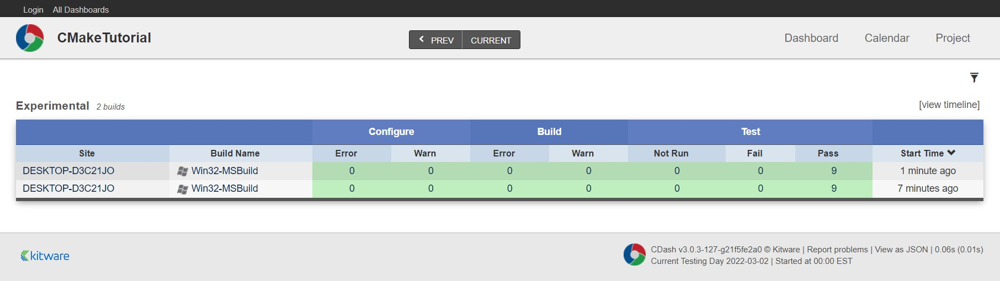

向仪表板提交测试结果
1. 修改最上层的 CMakeLists.txt 文件
将 enable_testing() 替换为 include(CTest)，CTest 模块会自动调用 enable_testing()
# 设置CMake版本最低要求
cmake_minimum_required(VERSION 3.10)
# 设置项目名称和版本
project(Tutorial VERSION 3.1)
# 指定 C++ 标准
set(CMAKE_CXX_STANDARD 11)
set(CMAKE_CXX_STANDARD_REQUIRED True)
# 设置编译选项
option(USE_MYMATH "Use tutorial provided math implementation" ON)
# 生成一个头文件，传递 CMake 的一些设置到源代码
configure_file(TutorialConfig.h.in TutorialConfig.h)
# 添加 MathFunctions library
# add_subdirectory(MathFunctions)
if(USE_MYMATH)
add_subdirectory(MathFunctions)
list(APPEND EXTRA_LIBS MathFunctions)
endif()
# 添加源码文件和生成的目标文件的名称
add_executable(Tutorial main.cpp)
# target_link_libraries(Tutorial PUBLIC MathFunctions)
target_link_libraries(Tutorial PUBLIC ${EXTRA_LIBS})
# 添加头文件查找路径
# target_include_directories(Tutorial PUBLIC
# "${PROJECT_BINARY_DIR}"
# "${PROJECT_SOURCE_DIR}/MathFunctions"
# )
target_include_directories(Tutorial PUBLIC
"${PROJECT_BINARY_DIR}"
)
## 安装
install(TARGETS Tutorial DESTINATION bin)
install(FILES "${PROJECT_BINARY_DIR}/TutorialConfig.h"
DESTINATION include
)
# enable dashboard scripting
include(CTest)
# does the application run
add_test(NAME Runs COMMAND Tutorial 25)
# does the usage message work?
add_test(NAME Usage COMMAND Tutorial)
set_tests_properties(Usage
PROPERTIES PASS_REGULAR_EXPRESSION "Usage:.*number"
)
# define a function to simplify adding tests
function(do_test target arg result)
add_test(NAME Comp${arg} COMMAND ${target} ${arg})
set_tests_properties(Comp${arg}
PROPERTIES PASS_REGULAR_EXPRESSION ${result}
)
endfunction()
# do a bunch of result based tests
do_test(Tutorial 4 "4 is 2")
do_test(Tutorial 9 "9 is 3")
do_test(Tutorial 5 "5 is 2.236")
do_test(Tutorial 7 "7 is 2.645")
do_test(Tutorial 25 "25 is 5")
do_test(Tutorial -25 "-25 is (-nan|nan|0)")
do_test(Tutorial 0.0001 "0.0001 is 0.01")
## Packaging an Installer
# 此模块将打包项目当前平台所需的任何运行时库
include(InstallRequiredSystemLibraries)
set(CPACK_RESOURCE_FILE_LICENSE "${CMAKE_CURRENT_SOURCE_DIR}/License.txt")
set(CPACK_PACKAGE_VERSION_MAJOR "${Tutorial_VERSION_MAJOR}")
set(CPACK_PACKAGE_VERSION_MINOR "${Tutorial_VERSION_MINOR}")
set(CPACK_SOURCE_GENERATOR "TGZ")
include(CPack)
2. 添加 CTestConfig.cmake 文件
在顶级目录中添加 CTestConfig.cmake 文件，在这个文件里为 CTest 指定关于项目的信息，CTest 可执行文件在运行时将读取这个文件
# 项目名称
set(CTEST_PROJECT_NAME "CMakeTutorial")
# 24 小时制
set(CTEST_NIGHTLY_START_TIME "00:00:00 EST")
# 发送提交生成的文档的CDash实例的URL
set(CTEST_DROP_METHOD "http")
set(CTEST_DROP_SITE "my.cdash.org")
set(CTEST_DROP_LOCATION "/submit.php?project=CMakeTutorial")
set(CTEST_DROP_SITE_CDASH TRUE)
3. 执行 ctest 命令
在 build 目录下运行命令：
ctest [-VV] -D Experimentalctest [-VV] -C Debug -D Experimental
4. 查看数据
CTest 可执行文件将构建和测试项目并将结果提交给 Kitware 的公共仪表板：https://my.cdash.org/index.php?project=cmaketutorial
